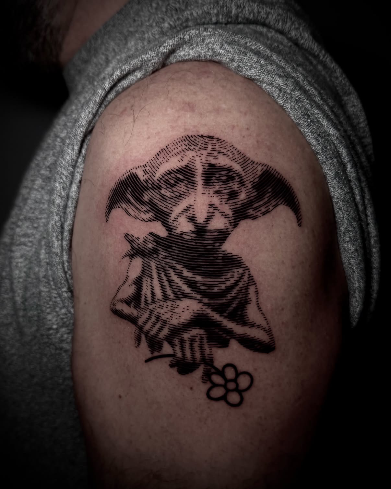
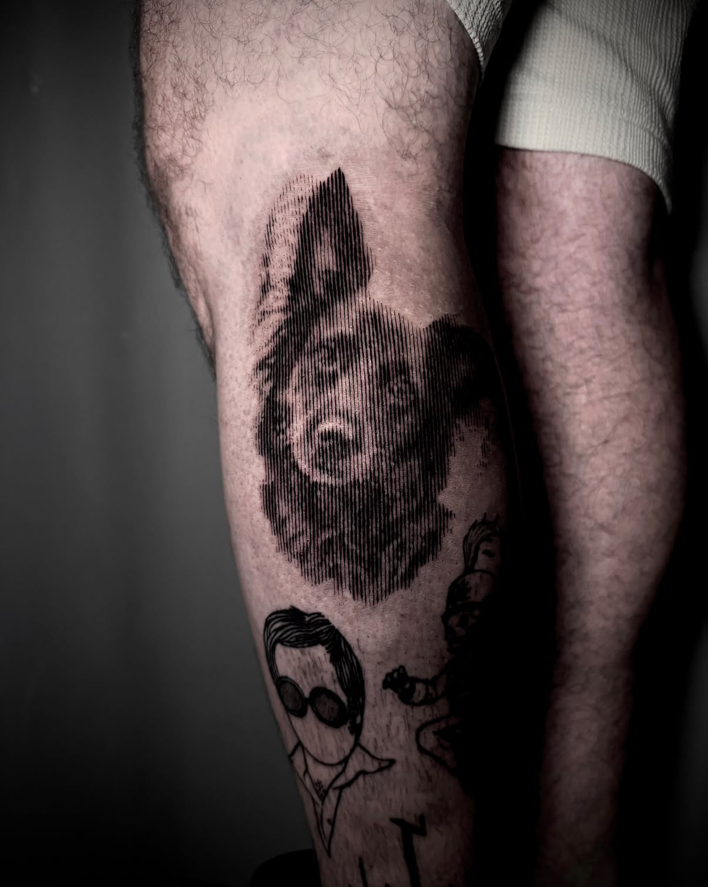
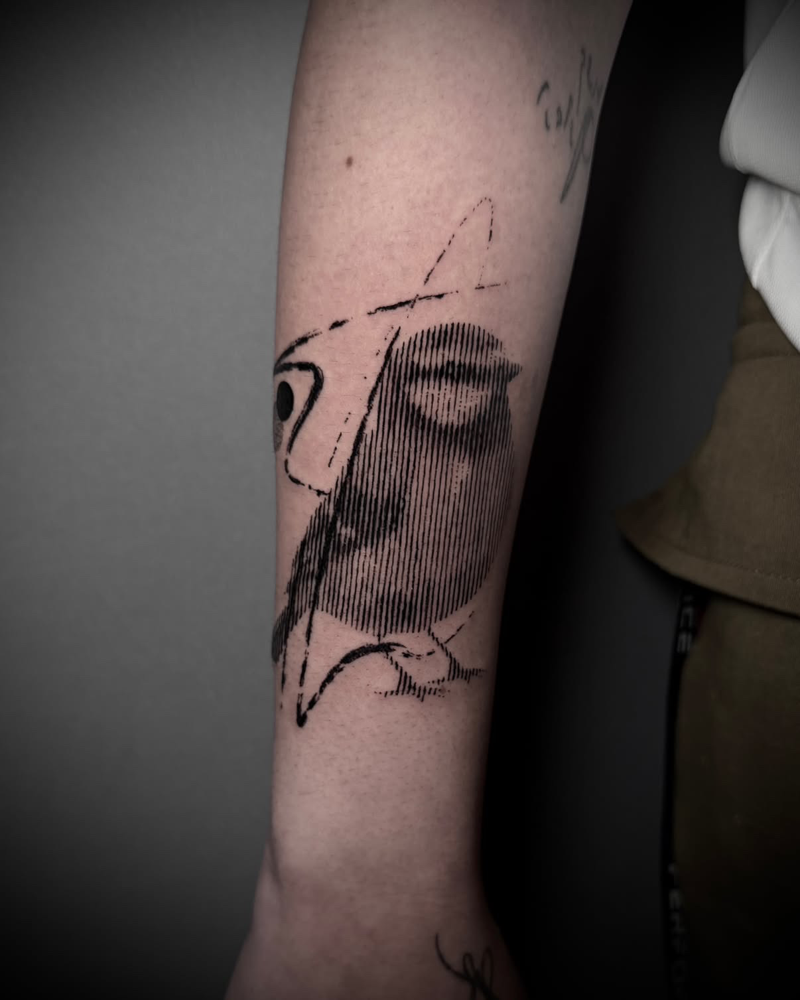

Том Эшет: реализм, собранный из линий
О собственном художественном языке, точности, заживших татуировках и свободе внутри узнаваемого стиля
Издалека — реалистичное изображение. Вблизи — линии, из которых складываются свет, тень и объём. Именно этот переход между целым и деталями увлекает Тома Эшета, работающего в технике halftone. В интервью TATTOO TUT он рассказывает, как постепенно нашёл собственный художественный язык, почему при изменении портрета старается сохранить характер человека и чему его учат зажившие работы. За точностью его татуировок стоит интерес к экспериментам: Том хочет соединять свою технику с другими направлениями, включая олдскул. Мы поговорили о том, что даёт специализация и чем за неё приходится платить, как меняется представление о хорошем мастере и какое место художник готов отвести искусственному интеллекту в творческом процессе.
 Фотография из набора, предоставленного для интервью.
Фотография из набора, предоставленного для интервью.1. Между первым взглядом и внимательным рассмотрением
TATTOO TUT: Какое изображение первым по-настоящему тебя увлекло? Замечаешь ли ты след этого впечатления в своих работах сегодня?
Том Эшет: Сколько себя помню, меня всегда привлекали изображения, в которых есть что-то помимо того, что видишь с первого взгляда. Мне нравятся работы, которые заставляют остановиться, присмотреться и попытаться понять, как они созданы.
Думаю, это увлечение по-прежнему очень заметно в моих работах. Например, в моей технике halftone издалека видишь реалистичное изображение, а подойдя ближе, понимаешь, что оно целиком состоит из линий. Меня очень увлекает этот контраст.
2. Как появляется собственный язык
TATTOO TUT: Была ли конкретная татуировка, после которой ты впервые почувствовал, что halftone — твой собственный художественный язык? Расскажи о ней.
Том Эшет: Не думаю, что это произошло с какой-то одной татуировкой. Скорее, это был процесс экспериментов, обучения и постоянного совершенствования техники.
Изначально в halftone меня привлекла сама идея: можно создать реалистичное изображение с глубиной, светом и тенью, используя только линии. Без привычной теневой растушёвки и серых оттенков.
Со временем я начал понимать, что даже самое небольшое изменение толщины линий или расстояния между ними может полностью преобразить изображение. Чем глубже я изучал эту технику, тем сильнее чувствовал, что вырабатываю художественный язык, который действительно меня отражает.
 Работа Tom Eshet. Фотография предоставлена для интервью.
Работа Tom Eshet. Фотография предоставлена для интервью.3. Характер важнее формы
TATTOO TUT: Когда ты разбиваешь портрет на фрагменты или искажаешь его, что в изображённом человеке тебе важнее всего сохранить?
Том Эшет: Для меня важнее всего сохранить характер человека и выражение его лица.
Я люблю экспериментировать с композицией, разбивать формы на части и сочетать разные графические элементы. Но в итоге мне всё равно важно, чтобы портрет передавал эмоцию и оставался узнаваемым.
Я считаю, что, даже меняя способ изображения лица, нельзя терять то, что делает человека уникальным.
4. Где живёт импровизация
TATTOO TUT: Сколько места для импровизации остаётся при такой точной работе с линиями? Можешь вспомнить работу, которая удивила тебя самого?
Том Эшет: Наверное, гораздо меньше, чем можно было бы подумать.
Моя техника требует очень тщательного планирования. Каждая линия влияет на соседние, и даже небольшое отклонение может изменить конечный результат.
Основная творческая свобода у меня — на этапе разработки эскиза. Я люблю пробовать разные композиции, сочетать стили и искать неожиданные решения.
Для меня художественная свобода и техническая точность не противоречат друг другу. Они дополняют друг друга.
 Работа Tom Eshet. Фотография предоставлена для интервью.
Работа Tom Eshet. Фотография предоставлена для интервью.5. Убрать лишнее и сохранить глубину
TATTOO TUT: Что за пределами татуировки сильнее всего повлияло на твой взгляд? Как это проявляется в твоих работах?
Том Эшет: Думаю, на мою эстетику сильно повлияли графический дизайн, фотография и взаимодействие света и тени.
Особенно меня привлекают минимализм и возможность передать очень многое с помощью совсем небольшого числа элементов.
Этот подход я переношу и в татуировки. Я всегда ищу, что можно убрать из эскиза, сохранив его глубину и смысл.

Работа Tom Eshet. Фотография предоставлена для интервью.6. Встреча двух идей
TATTOO TUT: Бывало ли, что история клиента направляла эскиз туда, куда ты сам никогда бы не пошёл? Расскажи, как это произошло.
Том Эшет: Одна из вещей, которые я больше всего люблю в татуировке, — это момент, когда идея клиента встречается с моей художественной интерпретацией.
Иногда человек приходит с идеей или сочетанием элементов, до которых я сам никогда бы не додумался. И нередко именно такие задачи приводят к самым интересным результатам.
Я стараюсь не отвергать идеи только потому, что они отличаются от того, что я обычно делаю. Мне интересно исследовать, как взять такую идею и перевести её на собственный художественный язык.
 Работа Tom Eshet. Фотография предоставлена для интервью.
Работа Tom Eshet. Фотография предоставлена для интервью.7. Что становится видно после заживления
TATTOO TUT: На что ты обращаешь внимание, когда видишь свою татуировку зажившей? Как это влияет на следующий эскиз?
Том Эшет: Я считаю, что татуировку нужно оценивать не только сразу после завершения работы. Гораздо важнее, как она выглядит после заживления и как сохраняется со временем.
Для моей техники это особенно важно, потому что с годами линии татуировки обычно немного расширяются.
Я внимательно смотрю на расстояние между линиями, контраст и читаемость изображения. Мне важно, чтобы после заживления рисунок сохранял глубину и детали.
Каждая зажившая татуировка чему-то меня учит, и этот опыт я использую в следующей работе.
8. Ответственность мастера
TATTOO TUT: Какое своё представление о том, что значит быть хорошим тату-мастером, ты со временем пересмотрел?
Том Эшет: Раньше я придавал большое значение техническому мастерству художника.
Сегодня я считаю, что быть хорошим тату-мастером — гораздо больше, чем просто уметь сделать красивую татуировку.
Нужно уметь слушать клиентов, понимать тело, правильно выбирать размер и расположение работы. А иногда — понимать, когда стоит сказать человеку, что определённая идея просто не будет хорошо работать в татуировке.
Я считаю, что мы отвечаем за создание работы, которая будет хорошо выглядеть и сегодня, и спустя годы.

Работа Tom Eshet. Фотография предоставлена для интервью.9. За пределами узнаваемого стиля
TATTOO TUT: Что удивило бы в тебе человека, который знает тебя только по твоим татуировкам?
Том Эшет: Возможно, то, что за всеми этими тщательно спланированными и точными татуировками стоит человек, который очень любит экспериментировать и исследовать новые направления.
Я люблю стиль, который выработал, но точно не хочу чувствовать себя ограниченным им.
Мне нравится соединять разные художественные миры — иногда даже те, которые кажутся полной противоположностью друг другу, — и смотреть, как из этого может получиться что-то новое.
 Работа Tom Eshet. Фотография предоставлена для интервью.
Работа Tom Eshet. Фотография предоставлена для интервью.10. Цена специализации
TATTOO TUT: Какое трудное решение на своём художественном пути ты принял бы снова?
Том Эшет: Решение сосредоточиться на одном конкретном стиле и посвятить себя его максимально глубокому развитию.
Выбирая специализацию в одной технике, ты в какой-то мере отказываешься от свободы делать абсолютно всё.
Но я считаю, что становление собственного художественного почерка требует времени, экспериментов, ошибок и постоянного совершенствования.
Я очень рад, что выбрал этот путь: он позволил мне создать то, что я действительно ощущаю своим.
11. Место ИИ в работе художника
TATTOO TUT: Как ты относишься к ИИ в татуировке? Какую роль, если вообще какую-либо, ты отвёл бы ему в собственном творческом процессе?
Том Эшет: Я считаю искусственный интеллект очень интересным инструментом. Как и с любой новой технологией, самое важное — то, как мы решаем его использовать.
Я вижу в нём возможность поддержать творческий процесс: особенно при поиске идей, построении композиций и экспериментах с разными направлениями.
Но для меня ИИ не заменяет художника.
Чтобы понимать, что будет работать на теле, как заживёт татуировка, как адаптировать эскиз под конкретного человека и как выполнить саму работу, нужны опыт, знания и способность человека принимать решения.
Я считаю, что будущее — в поиске правильного баланса между технологиями и творчеством, а не в замене одного другим.
12. Следующее направление
TATTOO TUT: Если бы от тебя никто не ждал определённого стиля, что тебе больше всего хотелось бы попробовать дальше?
Том Эшет: Мне хотелось бы и дальше исследовать сочетания разных стилей.
Особенно интересно брать элементы традиционной татуировки — например, олдскульные мотивы — и соединять их с реализмом и работой с линиями в моей технике halftone.
Мне нравится контраст между чем-то смелым, графичным и простым и чем-то тонким, очень детализированным.
Для меня художественный рост не означает отказ от стиля, который я создал. Мне хочется и дальше развивать его в новых и неожиданных направлениях.

Работа Tom Eshet. Фотография предоставлена для интервью.